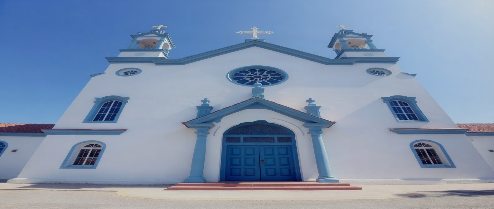
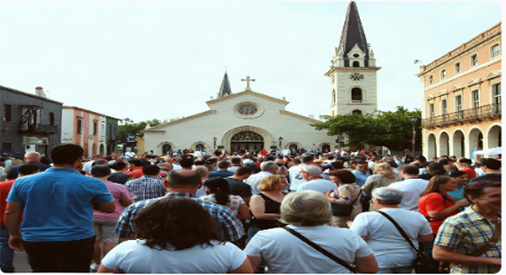
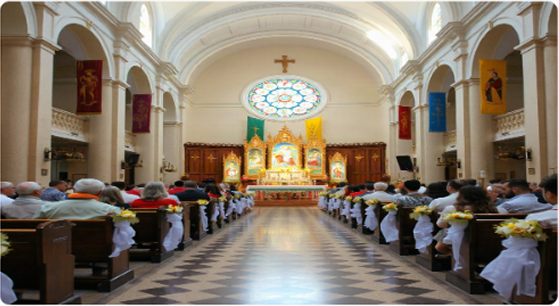
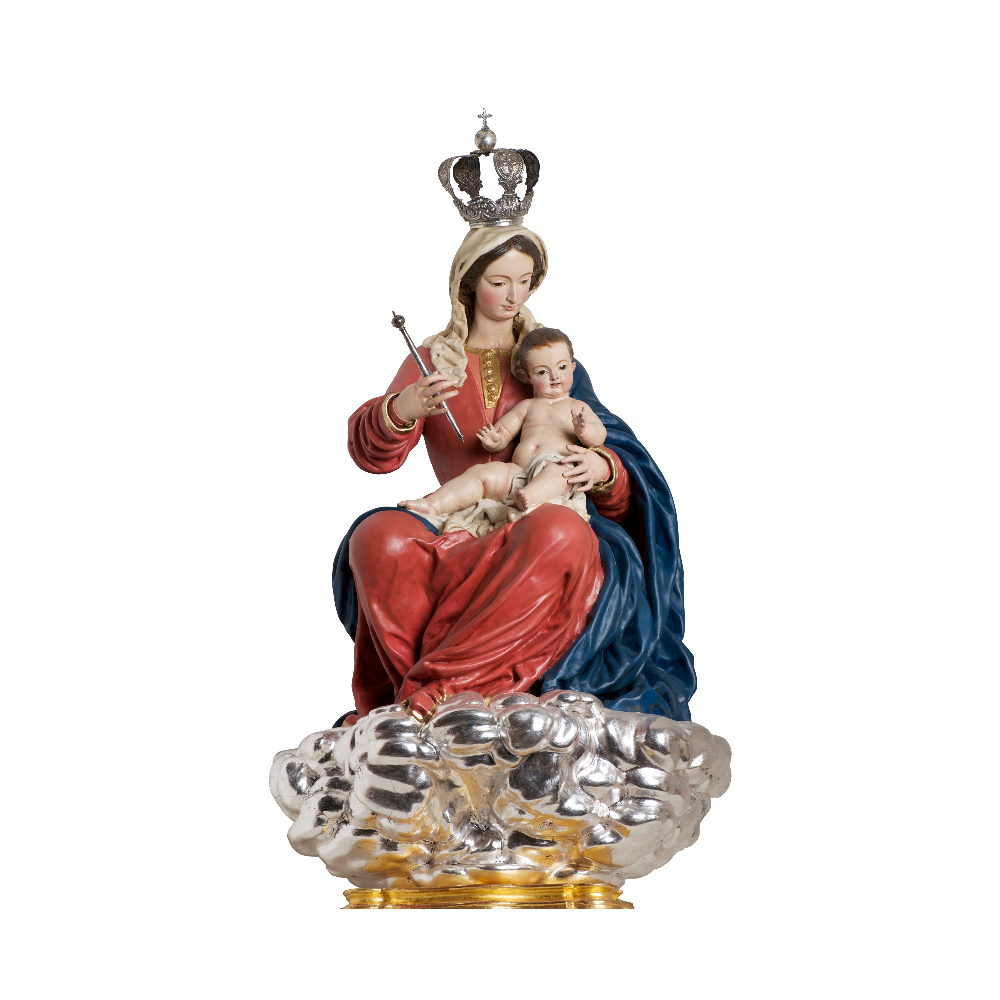

IGLESIA SAN MATEO


Somos una familia de fe unida por el amor de Cristo, dedicada a servir a nuestra comunidad
con humildad y devoción
Evangelizar y promover la caridad cristiana en cada hogar de nuestra parroquia
Ser un centro de renovación espiritual y social para las futuras generaciones
La imagen de la Virgen de Belén es el centro de nuestra devoción. Su mirada maternal nos acompaña en cada paso de nuestra vida parroquial.

A través de su intercesión hemos recibido innumerables gracias. Conoce más sobre su historia y milagros en nuestra biblioteca virtual.
Nuestra comunidad de fe y servicio
correo@gmail.com